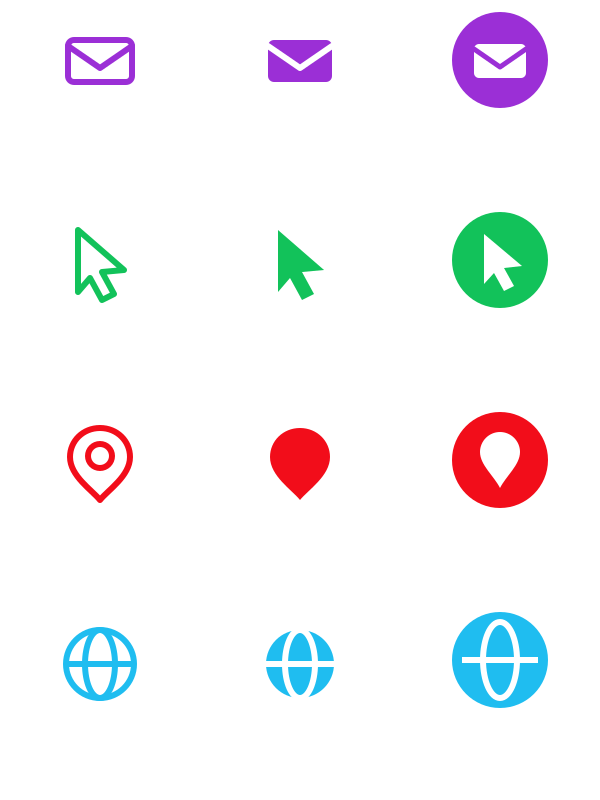
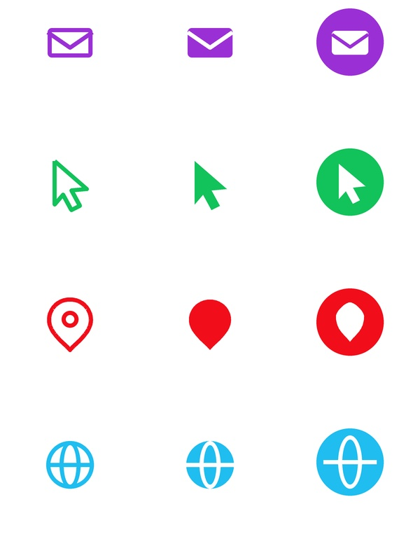
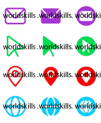

依 icons_sample.jpg 重新繪製 12 個圖示，且必須是向量圖。



#9b2fd6、綠 #12c25a、紅 #f20d1a、藍 #1fbdf0。A02.svg 建立向量稿：以 rect / polyline / path / circle / ellipse 描述每個圖示，並用 <defs> + <use> 重複利用形狀。A02.jpg。產生成品的完整程式：build.py（Python + Pillow）
icons_sample_watermark.jpg：題目提供的圖示參考